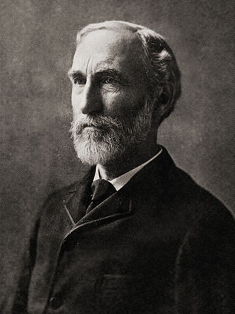

1839–1903
American
Physics, mathematics, vector analysis
Josiah Willard Gibbs was born in New Haven, Connecticut, the son of a Yale professor of sacred literature. He studied at Yale, earning what is often cited as the first American PhD in engineering (1863), then spent three years in Europe attending lectures in Paris, Berlin, and Heidelberg. He returned to Yale in 1871 and remained there for the rest of his life, holding the first professorship of mathematical physics in the United States.
Gibbs was the quintessential “physicist’s mathematician.” His contributions to thermodynamics, published in the Transactions of the Connecticut Academy — an obscure journal that limited his readership — were among the most important scientific works of the 19th century. His formulation of chemical potential, free energy, and the phase rule laid the theoretical foundations of physical chemistry.
His contribution to Fourier analysis came almost incidentally. In 1898, the physicist Albert Michelson (of Michelson–Morley fame) built a mechanical harmonic analyser to compute Fourier partial sums and noticed persistent overshoots near discontinuities. Michelson blamed the mathematics. Gibbs responded in a letter to Nature in 1899, explaining that the overshoot was genuine: Fourier partial sums necessarily overshoot at jump discontinuities by approximately 9% of the jump height, and this ringing narrows but never disappears as more terms are added. The phenomenon now bears his name.
Gibbs also developed the modern notation for vector analysis, writing his unpublished lecture notes Elements of Vector Analysis in 1881–1884. His student Edwin Bidwell Wilson later published a textbook based on these notes, establishing the div-grad-curl formalism that displaced Hamilton’s quaternions. Gibbs died in New Haven in 1903, recognised in Europe far more than in America during his lifetime.
| Phase | Page | Referenced for |
|---|---|---|
| Phase 5 | Cesàro Means | Gibbs phenomenon mentioned as a convergence pathology of Fourier series |
| Phase 6 | Inner Products and Gram–Schmidt | Gibbs (1881) and the historical development of the dot product |
| Phase 11 | Fourier Series | Gibbs phenomenon previewed: overshoot near discontinuities in partial sums |
| Phase 11 | Convergence of Fourier Series | Gibbs phenomenon: persistent 9% overshoot at artificial jump discontinuities |
| Phase 11 | Bessel's Inequality and Parseval's Theorem | Gibbs phenomenon: $L^2$ convergence does not prevent pointwise overshoot |
| Phase 11 | The Gibbs Phenomenon | Full treatment: 9% overshoot, the sine integral, the Gibbs constant |
| Phase 11 | The Gibbs Phenomenon | Historical context: response to Michelson’s harmonic analyser (1899) |
| Phase 11 | The Gibbs Phenomenon | Biographical note: physicist and inventor of vector notation |
| Phase 12 | Probability Spaces | Navigation link from the Gibbs Phenomenon page |